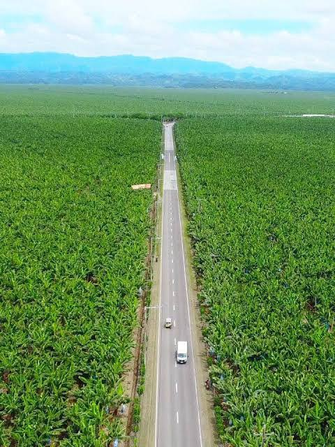

01
Tadeco Road
TADECO Banana Plantation is one of the major attractions associated with Panabo City, the “Banana Capital of the Philippines.” TADECO was founded in 1950 and became one of the country’s major producers of Cavendish bananas.
Photo stop